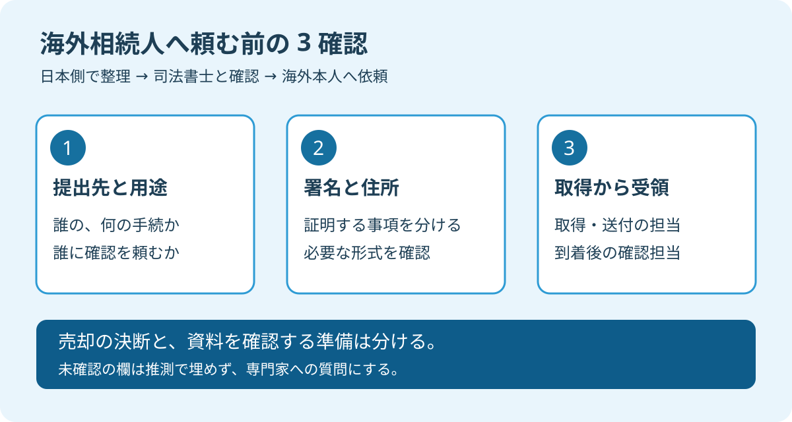

海外に住むきょうだいへ「相続の書類を取って送って」と連絡する。その前に、日本側で決めておきたいことがあります。書類を集める速さより、受け取った資料を何の手続に使うかを揃えることです。
大石浩之（磐田市／不動産業）です。宅地建物取引士として、私は売却の準備と登記の判断を分けて案内します。この記事は2026年10月8日に確認した資料に基づく、家族の準備の提案です。必要書類を一律に決める説明ではありません。
大阪府の2026年10月1日更新の案内では、10月1日から31日は住生活月間です。実家の書類を点検する機会として取り上げます。参照する日本司法書士会連合会の記事は2024年9月13日公表で、今月始まった新制度の紹介ではありません。
確認1：提出先と用途を先に一枚にする
海外相続人へ証明書を頼む前に、日本側の連絡係が「誰の、何の手続で、どこへ出す資料か」を書き出します。私は、書類名だけの依頼を避け、用途と提出先をセットで伝えるよう提案します。
たとえば、家族で相続の話を進める段階なのか、登記を依頼する準備なのか、売買の段取りを調整する段階なのか。まず現在地を言葉にします。「実家を売るため」という大きなくくりだけでは、確認してほしい仕事が相手に伝わりません。
日本司法書士会連合会が運営する「しほサーチ」は、署名証明の形式に違いがあると説明しています。取得前に依頼する司法書士へ確認するよう案内しています。証明書という同じ名前でも、先に使い道を確かめる必要がある点が、見落としやすい事実です。
私は、取得前の確認を促す案内を評価します。海外の相続人が動き始める前に疑問をまとめれば、家族も専門家も、どこまで話が進んだかを共有できます。資料を頼まれた側だけが、手続の全体像を知らない状態を減らせます。
そのうえで、私たち日本側の窓口にも注文があります。「必要書類をお願いします」で依頼を終えないことです。書類の用途、確認を受ける担当、疑問が出たときの連絡先まで示して、初めて相手が動ける依頼になると考えます。
| 日本側で埋める欄 | 司法書士へ伝える内容 |
|---|---|
| 本人と物件 | 誰の証明か、対象の実家はどこか |
| 用途と提出先 | 何の手続に使い、誰に確認してもらうか |
| 確認待ち | 形式、必要部数、原本の扱いなど未確定の点 |
| 連絡係 | 国内で回答を集約し、本人へ伝える人 |
この表は、私が勧める連絡用の整理です。表の全欄を家族だけで判断する必要はありません。「未確認」と書いて司法書士へ渡す欄があって構いません。分からない点を見える形にすることが、最初の仕事です。
実家の名義が分からなければ、登記事項証明書を確認する手順を参考に、今ある資料の名前を整理します。古い資料を持っている場合も、最新の確認に使えるかは依頼先へ聞いてください。

確認2：署名と住所の証明を分けて聞く
海外相続人の資料は、署名を証明するものと、住所を確認するものを分けて質問します。日本司法書士会連合会の案内には、住所の確認資料を別に必要とする場合があると記載されています。署名の資料だけで足りるとは決めつけられません。
私は「何という証明書か」に加えて、「何を確認するための資料か」を横に書く方法を勧めます。署名の確認欄と住所の確認欄を分け、必要かどうかを司法書士に回答してもらいます。家族の推測で両方を取得する、という意味ではありません。
海外本人へ依頼するときは、司法書士からの説明を途中で短くしすぎないようにします。「前に取ったものと同じでよさそう」と家族が判断すると、今回の提出先の条件が抜けるからです。分かりにくい言葉はそのまま質問に戻します。
確認事項には、本人の居住地や国籍など、司法書士が判断に必要とする情報もあります。必要な範囲は担当者に聞き、本人から安全な方法で伝えてもらいます。家族全員の連絡グループへ、本人確認資料の画像を一斉に送る必要があるとは限りません。
書類の種類が決まったら、依頼内容を一つのメッセージにまとめます。後から条件が変わった場合は、どの説明を訂正したかを明記します。短い連絡を何通も重ねるより、現在有効な依頼が一つに定まる形を、私は選びます。
すでに相続に関する申告を済ませた家族も、売却準備の完了とは分けて確認します。相続人申告登記と実家売却の関係も参照し、済んだ手続の名称を担当者へ正確に伝えてください。登記・相続の個別判断は専門家に確認を。
確認3：取得・送付・受領の担当を決める
海外からの証明書は、取得する日だけでなく、日本で受領して内容を確認するところまで予定に入れます。日本司法書士会連合会の案内も、国際郵便等にかかる時間と費用への配慮を促しています。
私は、予定表を「取得」「送付」「到着」「内容確認」の四つに分けます。取得できたという連絡と、日本側で使える資料が揃ったという連絡は別です。発送済みの一言だけで、売却の日程を確定させないようにします。
| 段階 | 家族が決めておく担当と連絡 |
|---|---|
| 取得の準備 | 海外本人が動ける候補日を国内連絡係へ伝える |
| 送付前 | 送付先、宛名、同封物を依頼先と照合する |
| 発送後 | 利用した送付方法と発送日を国内連絡係へ知らせる |
| 受領後 | 受取担当が到着を知らせ、内容確認を担当者へ頼む |
何日で届くか、いくらかかるかは、この記事では決められません。居住地や利用する方法が分からないためです。本人に予定を聞き、依頼先へ余裕のある日程を相談します。配送の見込みを、そのまま到着保証として扱わないことです。
費用を海外本人が立て替えるなら、日本側で誰が精算するかも決めます。書類の取得費と送付費を別の欄に残せば、後で何の負担だったかを確認できます。これは家族内の段取りの提案であり、特定の料金や負担義務を示すものではありません。
早く頼むほうが安心なのか、必要事項が揃うまで待つべきか、私も迷います。だから、連絡を先延ばしにはせず、「まだ取得を頼む段階ではないが、動ける時期を知りたい」と伝える方法を選びます。準備と発注を分ければ、相手の予定にも配慮できます。
磐田・袋井の家族は相談の入口を確かめる
磐田市の「相続・登記相談」は、司法書士へ相談できる予約制の窓口です。市の公式案内では、対象は磐田市在住の当事者です。相続税・贈与税は対象外とされています。海外本人が直接利用できる窓口としては案内しません。
利用条件や予約方法は、市の現在の公式ページで確認してください。袋井市に住む家族も、磐田市の案内をそのまま自分に当てはめず、居住地の窓口や依頼する司法書士に相談します。実家の所在地と、相談する人の住所を分けて伝えると確認しやすくなります。
相談先の役割が分からなければ、相続不動産の相談先を磐田で比較する記事も読めます。私は売却の進め方を整理し、証明書が個別の登記に使えるかは司法書士へ確認する形で、担当の境目を明らかにします。
今日の一歩は書類の注文ではなく確認表
海外相続人への証明書の依頼は、実家を売ると決めることとは別です。私は、売るか残すかの結論を急がせません。今日の成果は、未確認の欄が一つ分かり、次に誰へ聞くかが決まることです。
私はこう考えます。家族で画面を見ながら連絡文を作る場面なら、送信前に「誰へ出す」「何を証明する」「誰が受け取る」の三行を書きます。空欄を想像で埋めず、司法書士への質問として残します。これは実際の相談の再現ではなく、私の提案です。海外の家族に何度も動いてもらうより、日本側が一度立ち止まり、依頼の中身を揃えるほうを選びます。売却の結論まで同時に求める必要はありません。
- 今日、国内の連絡係を一人決める。
- 提出先と用途、署名と住所の確認欄を作る。
- 取得を頼む前に、司法書士へ未確認事項を送る。
富士ヶ丘サービスは、磐田・袋井を中心に、介護と不動産を一体で相談できる窓口です。家族が困らない売却のため、私は家の準備と書類の準備を並べて案内します。相続・登記・税務の個別判断は、司法書士・弁護士・税理士などの専門家に確認を。